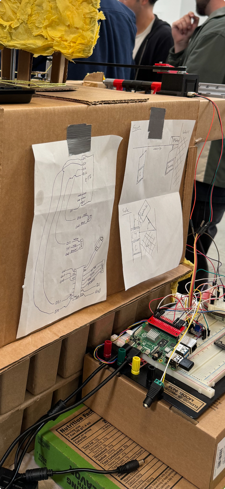

Project 02 — Hackathon · Robotics
Sauceathon
Build a robot from scratch, operating as part of a ten-robot multi-agent system, in 24 hours. Our team was cheese.
Project 02 — Hackathon · Robotics
Build a robot from scratch, operating as part of a ten-robot multi-agent system, in 24 hours. Our team was cheese.
A YouTube hackathon where content creators and engineers compete together, building robots from scratch that operate as a single coordinated system to make a burger.
Sauceathon was organized by William Osman, a popular engineering YouTuber. The premise: ten teams, each building one robot, all of which need to cooperate as a multi-agent system to assemble a complete burger. My team was responsible for the cheese.
This wasn't a software hackathon with a demo at the end. This was physical. Your robot had to work reliably, on time, around other robots, in a real kitchen environment, with induction stoves generating electromagnetic interference nearby and no margin for failure recovery.
Deliver a slice of cheese from packaging to burger; reliably, repeatedly, in sync with 9 other robots.
We broke the problem into three discrete mechanical steps, each requiring its own motion control:
The first motion: grab the cheese slice from its starting position and rotate it so it's flat and ready to be scraped off. Required precise angular control from the stepper motor and careful CAD design to hold the packaging without crushing it.
The trickiest step. Cheese is sticky. The scraper had to apply enough force to separate the slice cleanly without tearing it or knocking it out of alignment. This required multiple CAD iterations and physical testing under real time pressure.
Once the cheese was placed, the spent wrapper had to be cleared so the next cycle could begin without jamming. Timing this with the downstream robots in the multi-agent system added another coordination layer.
The cheese dispenser robot

Circuit & High level design
"Integrated with sensing to operate in a human-scale, unstructured environment alongside induction stoves, and other robots."
The induction stoves running nearby generated EMI that interfered with our servo signals, causing erratic behavior at the worst possible moments. We had to shield our wiring and tune our sensing thresholds under live competition conditions.
In a 24-hour window, there's no clean boundary between design and debugging. Code changes required hardware changes. Hardware changes broke the code. The fastest path through was having both in your head simultaneously — an integrated perspective of software, mechanics, and electronics.
A jammed wrapper or a misaligned cheese slice doesn't pause the rest of the system. We had to design recovery behaviors so that if step 2 failed, the robot could reset and retry without halting the whole burger assembly line.
People were moving around the competition floor throughout. The robot needed to behave predictably and safely in a shared, unstructured space, a constraint that turns out to be the defining challenge of all personal robotics.
Embodied systems have no hiding place. In software, a bug is invisible until you run it. In hardware, a bad weld or a loose connector shows up immediately, physically, in front of an audience.
Intersectional design is a skill, not a buzzword. Our best decisions came from the mechanical engineers and software engineers thinking together, not in sequence. The teams that siloed early struggled to integrate at the end.
A well-defined role in a distributed system mirrors how assistive devices work. Our robot had one job, deliver cheese, and it had to do it reliably so the rest of the system could depend on it. That's exactly the contract an assistive robot makes with its user.
Distributed robotics and human-robot collaboration share the same core problems. Coordination, timing, shared autonomy, graceful failure, the burger line and a rehabilitation robot are asking the same technical questions.